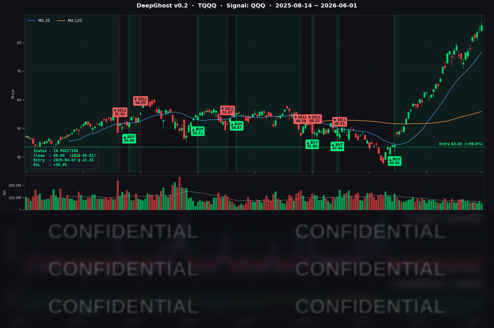

엔비디아 신규 CPU 발표가 다시 기술주 상승을 이끌었습니다.
기술주 쏠림 현상이 심화되고 있으며, 이는 안좋은 시그널 입니다.
금리, 유가는 안좋은 방향으로 움직였음에도 불구하고 지수는 올랐습니다.
과열 신호입니다.
이번 상승장에 거의 100% 수익률을 냈습니다. 적당히 물러설 때인 것 같습니다.
📊 오늘의 매매 신호
| 항목 | 내용 |
|---|---|
| 오늘 할 일 | ✅ 아무것도 안 해도 됩니다 |
| 포지션 상태 | 📈 TQQQ 보유 중 (IN POSITION) |
| 매수 진입일 | 2026-04-07 (55일째) |
| 진입가 → 현재가 | $43.45 → $86.04 |
| 현재 포지션 수익 | +98.02% |
TQQQ 시그널 — IN POSITION
현재 상태: 매수 포지션 유지 중 | 누적 수익률 +98.02%

오늘 미국 시장 — 시황 요약
지수 마감
| 지수 | 종가 | 등락률 |
|---|---|---|
| S&P 500 | 7,599.96 | +0.26% |
| Nasdaq Composite | 27,086.81 | +0.42% |
| Dow Jones | 51,078.88 | +0.09% |
| Russell 2000 | 2,905.76 | -0.47% |
| QQQ | 742.74 | +0.60% |
| TQQQ | 86.04 | +1.75% |
6월의 첫 거래일, 나스닥 지수가 사상 처음으로 27,000선을 돌파하며 역사적인 신고점을 경신했습니다. S&P 500도 7,599.96으로 신고점을 경신했습니다. NVIDIA가 Computex 2026에서 RTX Spark(N1X) PC 슈퍼칩을 발표하며 +6.26% 급등, 대형 기술주 전반을 견인했습니다.
단, 이란 호르무즈 위기 재부각으로 WTI 원유가 +5.60% 폭등하면서 인플레이션 우려가 재점화됐습니다. 소형주(IWM -0.50%)는 또다시 대형 기술주 대비 부진했습니다.
국채 금리 & 연준
| 만기 | 수익률 | 전일 대비 |
|---|---|---|
| 3개월 | 3.620% | +3.2bp |
| 5년 | 4.186% | +3.7bp |
| 10년 | 4.475% | +2.2bp |
| 30년 | 4.991% | -0.2bp |
단기~중기 금리가 2~4bp 일제히 상승했지만, 나스닥은 AI 모멘텀을 앞세워 금리 역풍을 무력화했습니다. 10년물 금리가 4.475%로 올라섰음에도 NVIDIA·MSFT 주가는 강하게 상승했습니다.
장단기 스프레드(10Y-3M +85.5bp)는 정상적인 우상향 곡선을 유지하며 경기 침체 우려를 일축하고 있습니다. 30년물이 4.99%로 5%에 근접한 상태를 유지 중인 점은 재정 리스크 측면에서 계속 주시할 필요가 있습니다.
연준은 6/6부터 FOMC 블랙아웃 기간에 진입합니다. WTI +5.60% 급등과 ISM 제조업 가격지수 82.1% 유지로 인플레이션 재가속 우려가 높아지면서, 시장은 첫 금리 인하 시점을 2027년으로 보고 있습니다. 6/17 FOMC에서는 동결이 사실상 확정적입니다.
오늘의 핵심 이슈
1. NVIDIA RTX Spark(N1X) — AI PC 패권 교체 선언
NVIDIA CEO 젠슨 황이 Computex 2026에서 RTX Spark 슈퍼칩을 공개했습니다. ARM 기반 CPU와 Blackwell GPU, 128GB 통합 메모리를 하나의 패키지에 담아 1 페타플롭(FP4) AI 연산을 지원합니다. 클라우드 없이 1,200억 파라미터 LLM을 온디바이스로 실행할 수 있는 성능입니다. Dell·HP·ASUS·Lenovo 등 6개 OEM 파트너가 2026년 가을 출시를 예고했습니다. NVDA +6.26%, MSFT +2.28%, AVGO +2.95%가 동반 강세를 보인 반면, 직접 경쟁 상대인 QCOM은 -8.78% 급락했습니다.
2. 이란 호르무즈 위협 — WTI +5.60% 폭등
이란이 이스라엘 공습 확대에 대응해 호르무즈 해협 봉쇄를 시사하는 성명을 발표했습니다. WTI 원유 선물이 $92.25(+5.60%), Brent가 $95.09(+3.30%)로 급등했습니다. 트럼프 대통령이 이스라엘-헤즈볼라 교전 중단 협정을 발표하며 일부 상승분을 반납했지만, WTI는 $92선을 유지했습니다. 에너지 물류 비용 부담이 AMZN(-3.47%)·TSLA(-4.57%)에 악재로 작용했습니다.
3. ISM 제조업 PMI 5월 54.0 — 4년 만에 최고치
5월 ISM 제조업 PMI가 54.0을 기록하며 4월(52.7) 대비 상승했습니다. 2022년 5월 이후 최고치로, 19개월 연속 확장 국면입니다. 다만 가격지수가 82.1%로 고공 행진 중이어서 인플레이션 억제 우려는 여전합니다. 다음 주 ADP(6/3)와 NFP(6/5) 고용 데이터가 연준 기조에 추가 영향을 줄 수 있습니다.
매크로 & 원자재
| 항목 | 수치 | 등락 |
|---|---|---|
| WTI 원유 | $92.25 | +5.60% |
| Brent 원유 | $95.09 | +3.30% |
| 금 (Gold) | $4,512.10 | -1.06% |
| VIX | 16.05 | +4.77% |
| 공포탐욕 지수 | 59 (Greed) | — |
유가 폭등이 오늘 시장의 최대 변수였습니다. WTI가 $92를 돌파하며 에너지 섹터 강세와 함께 인플레이션 우려를 동시에 자극했습니다. 금은 위험선호 강화와 달러 강세 압박으로 소폭 하락했습니다. VIX는 16.05로 20 미만을 유지하며 전반적인 시장 불안 수준은 낮게 유지됐습니다.
주요 종목 동향
| 종목 | 전일 종가 | 당일 종가 | 등락률 | 비고 |
|---|---|---|---|---|
| AAPL | 312.06 | 306.31 | -1.84% | WWDC 6/8 대기 중 차익실현 |
| NVDA | 211.14 | 224.36 | +6.26% | Computex RTX Spark 발표 — 당일 최대 상승 |
| MSFT | 450.24 | 460.52 | +2.28% | RTX Spark OEM 파트너, Azure AI 수혜 기대 |
| GOOGL | 380.34 | 376.37 | -1.04% | Gemini AI PC 경쟁 격화 우려 소폭 조정 |
| META | 632.51 | 600.47 | -5.07% | FTC 항소(29개 주) + EU 규제 압박 |
| AMZN | 270.64 | 261.26 | -3.47% | 유가 급등 물류비 우려 + 차익실현 |
| TSLA | 435.79 | 415.88 | -4.57% | 이란 리스크 → 에너지 가격 상승 역풍 |
| NFLX | 86.02 | 85.85 | -0.20% | 특별 헤드라인 없음 |
| AVGO | 446.77 | 459.97 | +2.95% | Q2 FY26 어닝(6/3) 기대감 |
| QCOM | 251.02 | 228.99 | -8.78% | NVIDIA RTX Spark 직격 — 당일 최대 낙폭 |
| INTC | 114.68 | 109.33 | -4.67% | NVIDIA PC칩 진입으로 x86 생태계 불확실성 |
Ghost.AI — Quantitative AI Investment
Model: DeepGhost v0.2 | Transformer-Based Deep Learning
Coverage: 13 tickers | Updated every trading day after US market close
⚠️ 본 자료는 정보 제공 목적으로만 작성되었으며 투자 권유가 아닙니다. 모든 투자의 책임은 투자자 본인에게 있습니다. 과거 성과가 미래 수익을 보장하지 않습니다.
[유의사항]
고스트에이아이 주식회사는 「자본시장과 금융투자업에 관한 법률」 제101조에 따른 유사투자자문업자로 등록된 사업자입니다.
- 본 서비스는 불특정 다수를 대상으로 발행되는 단방향 정보 제공 서비스이며, 투자자 개인의 재산 상황·투자 목적·위험 선호도를 반영한 개별 투자 조언이 아닙니다.
- 고스트에이아이 주식회사는 고객과 쌍방향 의사소통(개별 상담, 맞춤형 자문 등)을 제공하지 않습니다.
- 본 콘텐츠는 투자 권유 또는 매매 주문의 청약·청약의 권유에 해당하지 않으며, 최종 투자 판단 및 그에 따른 손익의 책임은 전적으로 투자자 본인에게 있습니다.
고스트에이아이 주식회사 | 유사투자자문업 등록번호: 제2025-000호